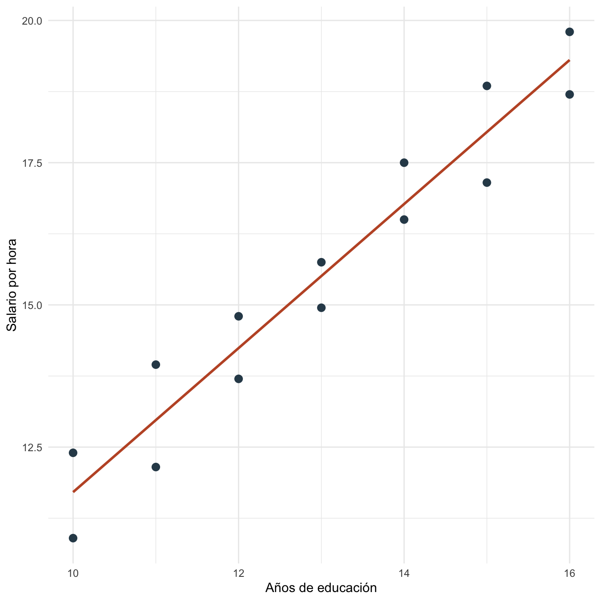
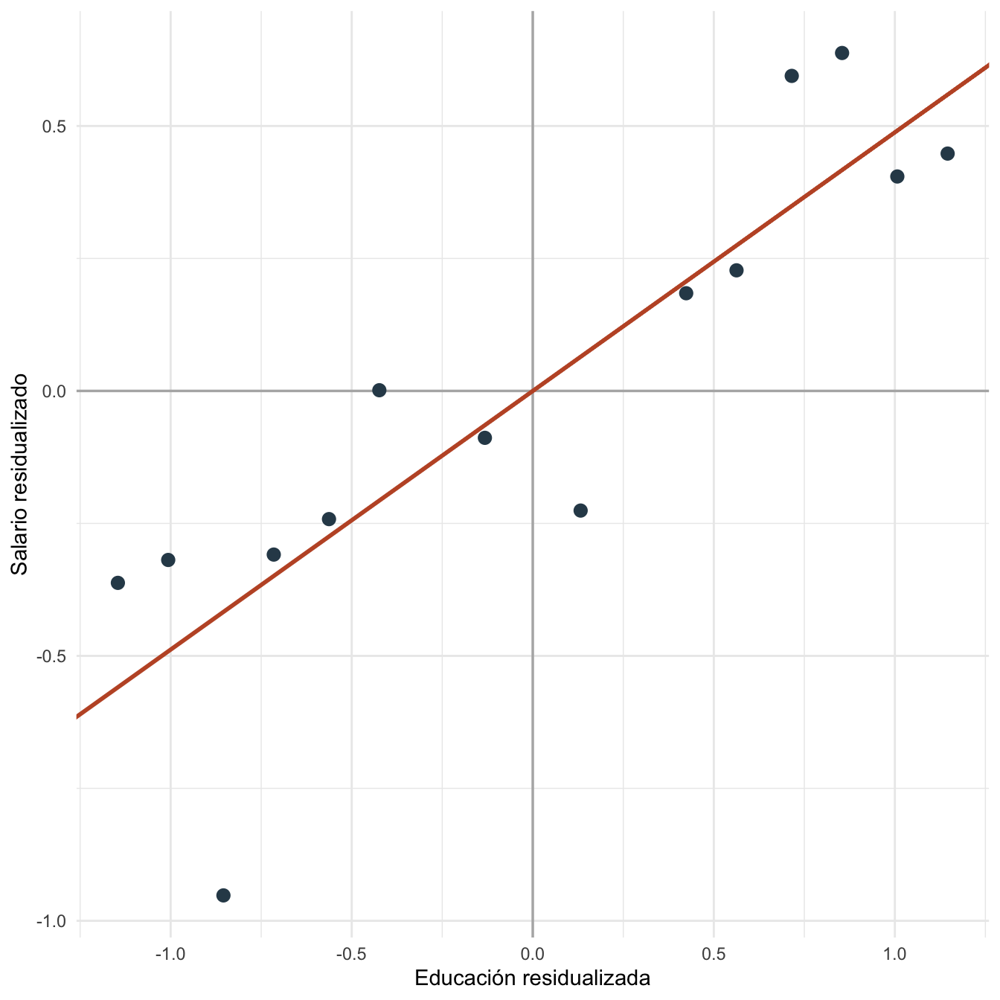

Capítulo 10 Frisch-Waugh-Lovell: práctica
10.1 Objetivos de la práctica
Al finalizar esta práctica podrás:
- Estimar un coeficiente parcial con una regresión múltiple.
- Reproducir el mismo coeficiente usando los tres pasos de FWL.
- Visualizar la relación entre residuos de \(y\) y residuos de la variable de interés.
- Replicar el ejercicio en R, Stata y Python.
10.2 Pregunta aplicada
Queremos medir la asociación entre educación y salario por hora, controlando por experiencia.
FWL pregunta: después de quitar de salario y educación la parte explicada por experiencia, ¿qué relación queda entre ambos residuos?
10.3 Datos
Usaremos una base pequeña construida para que educación y experiencia estén correlacionadas. Esto permite ver por qué el coeficiente simple y el coeficiente parcial pueden diferir.
datos_fwl <- data.frame(
educacion = c(10, 10, 11, 11, 12, 12, 13, 13, 14, 14, 15, 15, 16, 16),
experiencia = c(2, 4, 3, 6, 5, 7, 6, 9, 8, 10, 9, 12, 11, 13),
ajuste = c(-0.4, 0.3, -0.2, 0.4, -0.1, 0.2, 0.1, -0.3, 0.2, 0.4, -0.2, 0.3, -0.1, 0.2)
)
datos_fwl$salario_hora <- 4 +
0.65 * datos_fwl$educacion +
0.40 * datos_fwl$experiencia +
datos_fwl$ajuste
kable(datos_fwl, digits = 2, caption = "Datos de práctica para el teorema de Frisch-Waugh-Lovell")| educacion | experiencia | ajuste | salario_hora |
|---|---|---|---|
| 10 | 2 | -0.4 | 10.90 |
| 10 | 4 | 0.3 | 12.40 |
| 11 | 3 | -0.2 | 12.15 |
| 11 | 6 | 0.4 | 13.95 |
| 12 | 5 | -0.1 | 13.70 |
| 12 | 7 | 0.2 | 14.80 |
| 13 | 6 | 0.1 | 14.95 |
| 13 | 9 | -0.3 | 15.75 |
| 14 | 8 | 0.2 | 16.50 |
| 14 | 10 | 0.4 | 17.50 |
| 15 | 9 | -0.2 | 17.15 |
| 15 | 12 | 0.3 | 18.85 |
| 16 | 11 | -0.1 | 18.70 |
| 16 | 13 | 0.2 | 19.80 |
ggplot(datos_fwl, aes(x = educacion, y = salario_hora)) +
geom_point(color = "#2f4858", size = 2.7) +
geom_smooth(method = "lm", se = FALSE, color = "#C0562F", linewidth = 1) +
labs(x = "Años de educación", y = "Salario por hora") +
theme_minimal()
Figura 10.1: Relación bruta entre educación y salario por hora
10.4 Estimación en R
Primero estimamos la regresión simple y la regresión completa:
modelo_simple_fwl <- lm(salario_hora ~ educacion, data = datos_fwl)
modelo_completo_fwl <- lm(salario_hora ~ educacion + experiencia, data = datos_fwl)
modelo_y_fwl <- lm(salario_hora ~ experiencia, data = datos_fwl)
modelo_x_fwl <- lm(educacion ~ experiencia, data = datos_fwl)
datos_fwl$resid_y <- resid(modelo_y_fwl)
datos_fwl$resid_x <- resid(modelo_x_fwl)
modelo_residuos_fwl <- lm(resid_y ~ resid_x, data = datos_fwl)
tabla_completo_fwl <- coef(summary(modelo_completo_fwl))
tabla_residuos_fwl <- coef(summary(modelo_residuos_fwl))
beta_simple_fwl <- unname(coef(modelo_simple_fwl)[["educacion"]])
beta_completo_fwl <- unname(coef(modelo_completo_fwl)[["educacion"]])
beta_residuos_fwl <- unname(coef(modelo_residuos_fwl)[["resid_x"]])
se_completo_fwl <- tabla_completo_fwl["educacion", "Std. Error"]
se_residuos_fwl <- tabla_residuos_fwl["resid_x", "Std. Error"]
r2_completo_fwl <- summary(modelo_completo_fwl)$r.squared
kable(
data.frame(
estimacion = c("Regresión simple", "Regresión completa", "FWL con residuos"),
coeficiente_educacion = c(beta_simple_fwl, beta_completo_fwl, beta_residuos_fwl)
),
digits = 4,
caption = "Coeficiente de educación con y sin controles"
)| estimacion | coeficiente_educacion |
|---|---|
| Regresión simple | 1.2661 |
| Regresión completa | 0.4882 |
| FWL con residuos | 0.4882 |
ggplot(datos_fwl, aes(x = resid_x, y = resid_y)) +
geom_hline(yintercept = 0, color = "grey70", linewidth = 0.6) +
geom_vline(xintercept = 0, color = "grey70", linewidth = 0.6) +
geom_point(color = "#2f4858", size = 2.7) +
geom_abline(
intercept = coef(modelo_residuos_fwl)[["(Intercept)"]],
slope = coef(modelo_residuos_fwl)[["resid_x"]],
color = "#C0562F",
linewidth = 1
) +
labs(x = "Educación residualizada", y = "Salario residualizado") +
theme_minimal()
Figura 10.2: Regresión parcial de salario residualizado sobre educación residualizada
10.5 Interpretación
El coeficiente de educación en la regresión completa es 0.488. El coeficiente obtenido con FWL es 0.488. La igualdad confirma que ambos procedimientos estiman el mismo efecto parcial.
La regresión simple entrega una pendiente de 1.266, que no coincide necesariamente con el coeficiente parcial porque no controla por experiencia. El \(R^2\) de la regresión completa es 0.994.
FWL muestra qué significa “controlar por experiencia”. No convierte automáticamente la pendiente en causal: para eso se requiere justificar los supuestos de identificación.
10.6 Estimación en Stata
El mismo ejercicio puede correrse en Stata:
clear
input educacion experiencia ajuste
10 2 -0.4
10 4 0.3
11 3 -0.2
11 6 0.4
12 5 -0.1
12 7 0.2
13 6 0.1
13 9 -0.3
14 8 0.2
14 10 0.4
15 9 -0.2
15 12 0.3
16 11 -0.1
16 13 0.2
end
gen salario_hora = 4 + 0.65 * educacion + 0.40 * experiencia + ajuste
reg salario_hora educacion
reg salario_hora educacion experiencia
reg salario_hora experiencia
predict resid_y, resid
reg educacion experiencia
predict resid_x, resid
reg resid_y resid_xLos resultados esperados son los mismos coeficientes que Stata debe reproducir si usa la misma base y especificación:
| Estimación | Coeficiente aproximado | Error estándar aproximado |
|---|---|---|
| Educación en regresión completa | 0.488 | 0.083 |
| Educación residualizada en FWL | 0.488 | 0.079 |
| \(R^2\) completo | 0.994 |
10.7 Estimación en Python y Google Colab
Para correr esta práctica en Google Colab, abre un cuaderno y ejecuta:
Luego estima:
import pandas as pd
import statsmodels.formula.api as smf
import seaborn as sns
import matplotlib.pyplot as plt
datos_fwl = pd.DataFrame({
"educacion": [10, 10, 11, 11, 12, 12, 13, 13, 14, 14, 15, 15, 16, 16],
"experiencia": [2, 4, 3, 6, 5, 7, 6, 9, 8, 10, 9, 12, 11, 13],
"ajuste": [-0.4, 0.3, -0.2, 0.4, -0.1, 0.2, 0.1, -0.3, 0.2, 0.4, -0.2, 0.3, -0.1, 0.2]
})
datos_fwl["salario_hora"] = (
4 + 0.65 * datos_fwl["educacion"] +
0.40 * datos_fwl["experiencia"] +
datos_fwl["ajuste"]
)
simple = smf.ols("salario_hora ~ educacion", data=datos_fwl).fit()
completo = smf.ols("salario_hora ~ educacion + experiencia", data=datos_fwl).fit()
datos_fwl["resid_y"] = smf.ols("salario_hora ~ experiencia", data=datos_fwl).fit().resid
datos_fwl["resid_x"] = smf.ols("educacion ~ experiencia", data=datos_fwl).fit().resid
fwl = smf.ols("resid_y ~ resid_x", data=datos_fwl).fit()
print(simple.summary())
print(completo.summary())
print(fwl.summary())
sns.regplot(
data=datos_fwl,
x="resid_x",
y="resid_y",
ci=None,
scatter_kws={"color": "#2f4858"},
line_kws={"color": "#C0562F"}
)
plt.xlabel("Educación residualizada")
plt.ylabel("Salario residualizado")
plt.show()Los resultados esperados son los mismos coeficientes que Python debe reproducir si usa la misma base y especificación:
| Estimación | Coeficiente aproximado | Error estándar aproximado |
|---|---|---|
| Educación en regresión completa | 0.488 | 0.083 |
| Educación residualizada en FWL | 0.488 | 0.079 |
| \(R^2\) completo | 0.994 |
10.8 Comparación R, Stata y Python
La receta FWL es idéntica en los tres programas: estimar el modelo completo, residualizar \(y\), residualizar \(X_r\), y regresar residuo contra residuo. El coeficiente parcial debe coincidir.
| Tarea | R | Stata | Python |
|---|---|---|---|
| Modelo completo | lm(y ~ xr + xs) |
reg y xr xs |
ols("y ~ xr + xs") |
| Residualizar \(y\) | resid(lm(y ~ xs)) |
predict resid_y, resid |
.fit().resid |
| Residualizar \(X_r\) | resid(lm(xr ~ xs)) |
predict resid_x, resid |
.fit().resid |
| Regresión FWL | lm(resid_y ~ resid_x) |
reg resid_y resid_x |
ols("resid_y ~ resid_x") |
10.9 Errores frecuentes en la práctica
- Usar controles distintos. \(y\) y \(X_r\) deben residualizarse contra el mismo conjunto \(X_s\).
- Cambiar la muestra. FWL requiere que todas las regresiones usen las mismas observaciones.
- Olvidar la constante. Si el modelo completo tiene intercepto, las regresiones auxiliares también deben tenerlo.
- Interpretar FWL como causal por sí mismo. FWL es álgebra de regresión; la causalidad depende de supuestos adicionales.
10.10 Ejercicios computacionales
- Cambia la variable de control de
experienciaaexperiencia + I(experiencia^2). ¿Sigue coincidiendo FWL? - Elimina una observación antes de una sola regresión auxiliar. ¿Qué ocurre con la igualdad?
- Grafica
resid_ycontraresid_xy explica qué representa cada eje. - Repite el ejercicio en Stata y Python. Verifica que el coeficiente parcial coincida con R.
- Compara el coeficiente simple y el coeficiente completo. ¿Qué te dice la diferencia?